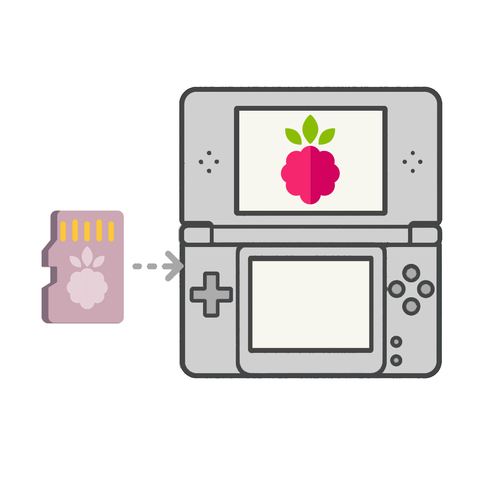

The app launcher for DS(i) flashcarts designed with modern simplicity and powered by Material Design 3. Compatible with many types of flashcarts, including the DSpico.

Customize your launcher with fresh themes and background music. Choose how you navigate: horizontal or vertical grid, banner list or cover flow.


Any file can have a cover! Pico Launcher also supports setting default apps per file extension such that any type of file can be launched using your favorite homebrew apps!
Fresh. Fast. Beautiful.
It's time to give your flashcart menu the upgrade it deserves.
The high-speed DS(i) app loader engineered for DSpico and compatible with many other existing flashcarts for DS(i).
From the moment you launch it, Pico Loader delivers near-instant access to your apps. Giving your DS(i) a smoother, snappier experience than ever before.
Don't have a DSpico? Pico Loader supports many other flashcarts out of the box, allowing you to enjoy the experience of Pico Loader on hardware you already own.
Lightning. Incredibly fast.
Experience loading at a whole new speed.